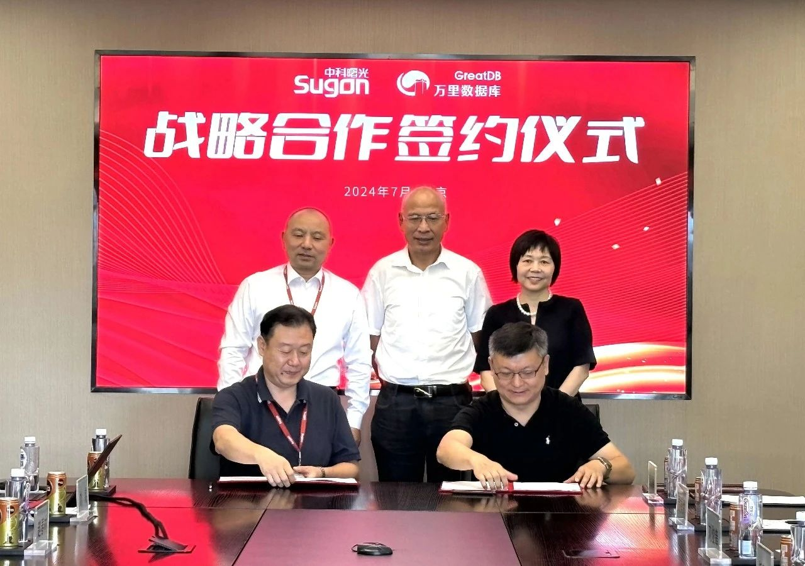
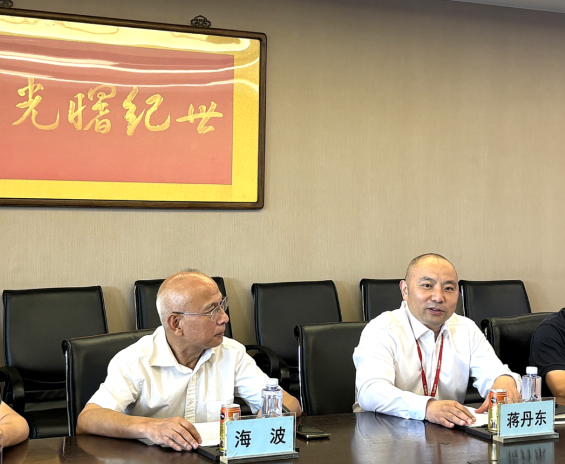
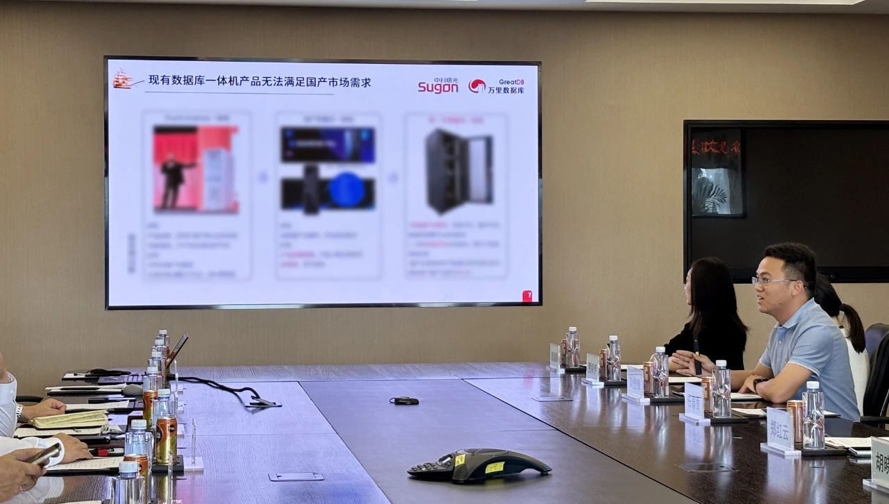
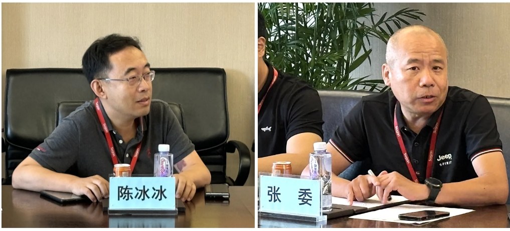
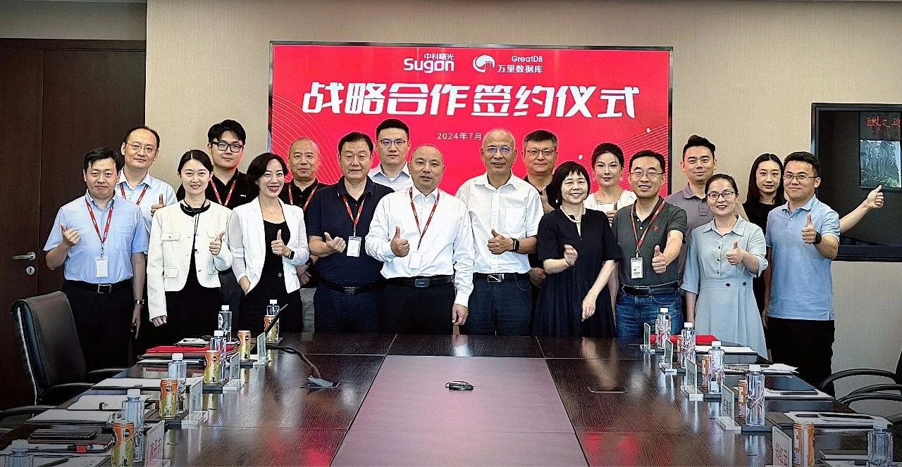

战略合作 | 万里数据库携手中科曙光 发布数据库一体机联合解决方案
7月26日，北京万里开源软件有限公司（以下简称“万里数据库”）与曙光信息产业股份有限公司（以下简称“中科曙光”）签署战略合作协议，并在现场正式发布数据库一体机联合解决方案。
双方将在发挥自身品牌价值、技术优势、业务布局、项目管理等多重优势的基础上达成深度合作，面向金融、运营商等重点领域提供联合解决方案。中关村国科航天产业技术创新联盟（以下简称“国科航天联盟”）秘书长海波、万里数据库董事长郑红云、中科曙光副总裁蒋丹东出席并见签，双方有关部门领导参加签约仪式。

战略合作仪式现场，国科航天联盟秘书长海波表示，中科曙光作为我国信息产业国家队，彰显了国家对信息系统安全的充分重视和相关领域成果，万里数据库是信创数据库领域重要的参与者，双方战略合作是从战略、市场、技术等多方面门当户对的合作，代表当下数字化、产业化、国产化的重要趋势。
国科航天联盟很荣幸作为连接双方的桥梁，见证这一合作仪式落地，希望两家公司未来以战略合作为开端，优势领域互补，真正推动企业双方落地合作，促进信创体系实现长足进步。
中科曙光副总裁蒋丹东表示，中科曙光作为算力平台，欢迎信创生态体系内的开放式合作，希望与优秀的合作伙伴在关键基础设施上提供安全可靠、性能良好的联合解决方案。
万里数据库基于过往积累的技术经验和模型，在金融、电信、能源等领域具备独特技术和优势，并且在MySQL替代方面展现出强大的竞争力，期待未来双方共同努力，进一步完善打磨联合解决方案，将其转化为真正的市场力量。

万里数据库董事长郑红云表示，万里数据库是国内数据库公司里最早一批从事数据库技术研发的厂商，在金融、运营商等行业生产系统、核心系统实现规模化应用，并于去年底通过安可测评。在数字化浪潮下，万里数据库希望借助时代潮流趋势，与中科曙光这艘巨轮达成合作，顺应国家趋势，回应国家关切和信创替代的迫切性，让产品和相关能力得到市场进一步认可。
联合解决方案：数据库一体机 推动商业落地
万里数据库售前总监刘俊锋从战略合作具体落地角度，阐述了万里数据库与中科曙光数据库一体机联合解决方案的关键技术和后续规划。
刘俊锋表示，市面上现有的一体机产品因不符合未来国产替代需求、价格昂贵、产品成熟度低等多重原因，无法完全满足用户需求。此次万里数据库与中科曙光联合打造的新一代数据库一体机，基于全栈国产化、深度优化适配、开箱即用、统一运维、降本增效等业务目标，面向边缘站点、数据中心等特定应用场景，聚焦客户一体机的增长需求及性能要求，提供性能强劲、高性价比的一体机产品，帮助客户完成信创国产替代。

之后，中科曙光网安事业部总工程师陈冰冰、存储事业部生态合作总经理张委，分别基于网络安全、存储产品等角度，对数据库一体机未来的落地应用场景进行了展望，并给出了相应的市场拓展路径。

▲ 中科曙光网安事业部总工程师陈冰冰（左图）、存储事业部生态合作总经理张委（右图）分别发言
合作仪式现场，万里数据库与中科曙光交换双方兼容互认证书，并举行简短座谈，就各自业务布局、公司综合能力及未来合作细节展开深度沟通交流。
此次联合解决方案发布，是我国IT软硬件基础设施先进产能的一次重大握手，对于强化我国IT基础设施韧性建设、促进IT先进产业链发展意义重大。
双方将在未来进一步细化落地联合工作机制，以数据库联合一体机为合作切入点、着力点，推进技术资源、市场资源的共建共享，全面提升双方的市场营销、产业协同和技术研发能力，共同开启IT基础设施数字化发展新篇章。
